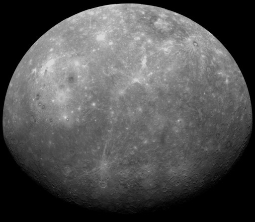

Mercure est la planète la plus proche du Soleil (0,4 UA de demi-grand axe soit 58 millions de km du soleil ), ainsi que la plus petite et la moins massive -4900 km de diamètre- juste plus du vingtième de la masse terrestre (0,055 masse terrestre). Elle est connue depuis l'antiquité et doit son nom au dieu Mercure, qui était chez les Romains le messager des dieux, et dieu du commerce et du voyage ; cela est du au fait quelle se déplace très vite. Mercure ne possède aucun satellite naturel et ses seules caractéristiques géologiques connues, en dehors des cratères d’impact, sont des dorsa, probablement produites par contraction thermique lors de la solidification interne, plus tôt dans son histoire. L’atmosphère de Mercure, quasiment inexistante, est formée d’atomes arrachés à sa surface par le vent solaire, ou momentanément capturé à ce vent. L’origine de son grand noyau de fer liquide et son fin manteau, composée de différents métaux, n’a toujours pas été expliquée de manière adéquate. Parmi les scénarios hypothétiques, il est possible que ses couches externes aient été balayées par un impact géant ou qu’elle a été stoppée dans son accrétion par l’énergie solaire. Sa période de révolution est d'environ 88 jours et sa période de rotation est de 58 jours.